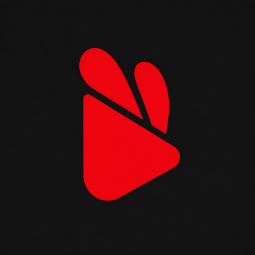

지금, 보고 싶은 영상을 바로essential; · 1.3만회
0:18 / 13:571.0× CC HD
영상은 영상답게.
화질·음성·자막·배속을 고르고, PiP나 백그라운드에서도 이어 재생합니다. 더블 탭으로 10초 이동하고 두 손가락으로 확대하세요.

RabbYTVideo · Music · Your files
YouTube 영상을 보고, 좋아하는 플레이리스트를 듣고, 마음에 든 미디어를 내 파일로. 온라인 재생과 기기 음악 관리, 영상·음원·사진 저장을 한 앱에서 이어갑니다.
RabbYT 3.0
YouTube 탐색과 전용 영상 플레이어를 더하고, 온라인 첫 실행부터 보관함까지 다시 다듬었습니다.
화질·음성·자막·배속을 고르고, PiP나 백그라운드에서도 이어 재생합니다. 더블 탭으로 10초 이동하고 두 손가락으로 확대하세요.
영상·Shorts·채널·재생목록을 검색합니다. 로그인하면 맞춤 추천과 구독 영상, 계정의 저장된 재생목록도 볼 수 있습니다.
영상·음원·플레이리스트의 재생 준비와 시작 대기를 줄였습니다. 지금 고른 콘텐츠를 먼저 시작하고, 재생하는 동안 다음 곡도 준비합니다.
좋아요 표시한 음악·동영상·플레이리스트를 나눠 모읍니다. 재생목록에서 곡을 빼도 실제 파일은 지우지 않습니다.
토끼 귀와 재생 방향만 남긴 새 심볼.
Direct APK
최신 정식 버전을 확인해 Android APK 파일을 바로 받을 수 있습니다.
What it does
온라인에서 찾은 영상부터 기기에 모아 둔 음악까지. 필요할 때 저장하고 다시 찾기 쉽게 정리합니다.
영상·Shorts·채널·재생목록을 검색하고 전용 영상 플레이어로 재생합니다. 계정을 연결하면 추천과 구독도 이어집니다.
기기 음악을 앨범·아티스트·폴더·재생목록으로 정리합니다. 좋아요와 검색으로 원하는 곡을 다시 찾습니다.
YouTube와 Instagram·X 등 지원 사이트의 링크를 분석해 제공되는 미디어와 형식을 선택합니다.
채널을 검색해 미리 확인하고 추가·삭제·정렬하세요. 플레이리스트형 영상은 음악 플레이어에서 이어 들을 수 있습니다.
백그라운드·잠금화면·PiP 재생과 종료 타이머를 지원합니다. 하단 플레이어바로 최근 재생 화면에 돌아옵니다.
여러 추출을 대기열로 처리하고 실패한 작업을 다시 시도합니다. 기록을 검색·필터하고 원본 링크를 복사하세요.
Fast path
이 페이지에서 APK 파일을 받습니다.
Android 설치 화면에서 설치를 승인합니다.
음악 보관함과 알림 권한을 필요한 시점에 허용합니다.
YouTube를 검색해 재생하거나, 링크를 추출기에 넣어 파일로 저장합니다.
설치 안내
다운로드가 끝나면 브라우저 또는 파일 앱의 다운로드 목록에서 APK 파일을 누릅니다.
설치 버튼을 누릅니다. 처음 설치하는 경우 알 수 없는 앱 설치 권한을 한 번 허용해야 할 수 있습니다.